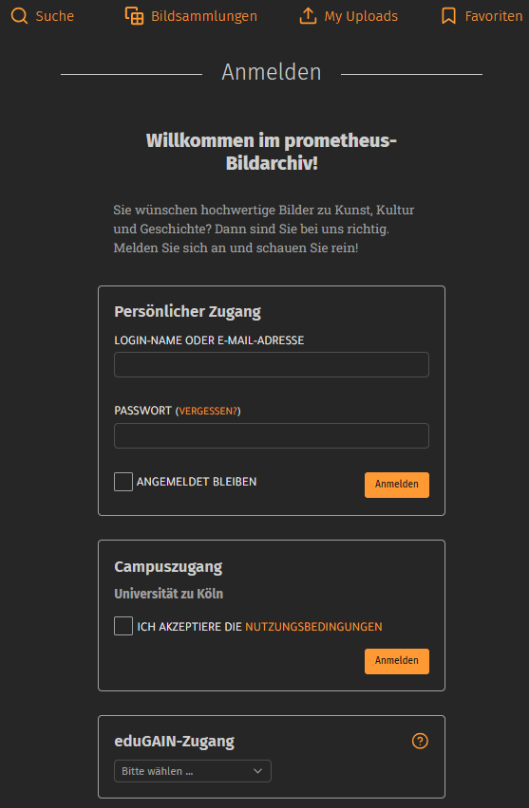
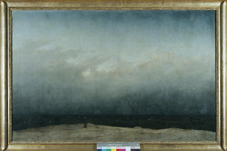
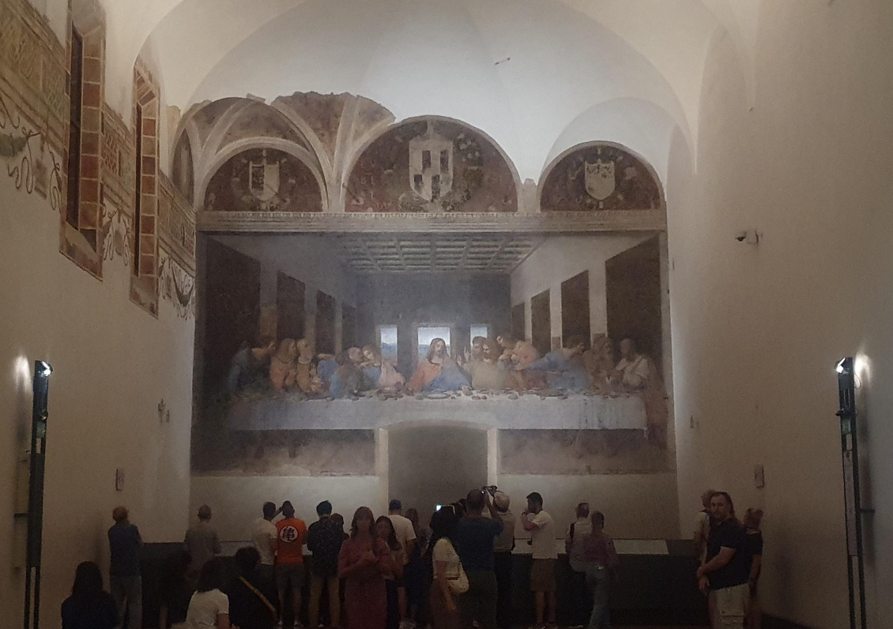
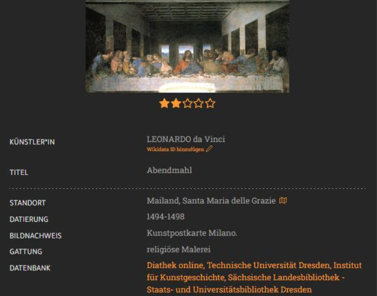
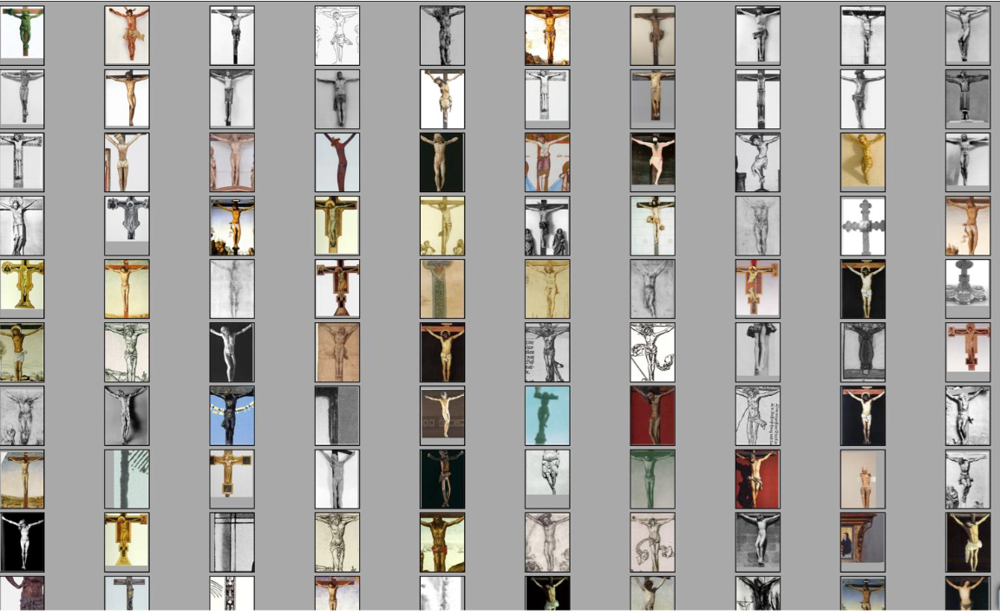
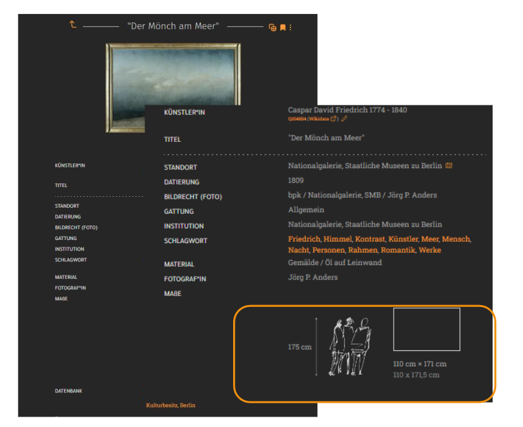

Sitzung 2: Prometheus
Einleitung: In dieser Sitzung wird Prometheus vorgestellt. Wir lernen, wie Bilder aus verschiedenen Museen, Universitäten und Forschungsprojekten in einem gemeinsamen System zusammengeführt werden. Außerdem wird erklärt, welche Rolle Metadaten und Normdaten spielen, welche Probleme digitale Sammlungen haben und welche Funktionen Prometheus dafür bietet.
Prometheus
Prometheus ist ein verteiltes digitales Bildarchiv. Es verbindet Bildsammlungen aus Museen, Universitäten, Forschungsprojekten und anderen Institutionen. Die Bilder bleiben in ihren eigenen Datenbanken, können aber über eine gemeinsame Suchoberfläche gefunden werden. Ein Problem ist, dass jede Institution ihre Daten anders speichert. Deshalb vereinheitlicht Prometheus die Informationen, damit alle Objekte in einem gemeinsamen System durchsucht werden können. Dafür werden Formate wie XML, CSV und APIs verwendet. Kleine Institutionen besitzen oft keinen eigenen Server oder keine API. In diesem Fall speichert Prometheus die Bilder und Metadaten auf den eigenen Servern. Außerdem durchsucht Prometheus nicht nur das eingegebene Wort. Verschiedene Schreibweisen wie Raffael, Raphael oder Raffaello werden automatisch erkannt. Auch ein englisches Wörterbuch ist integriert. Deshalb kann eine Suche nach „See“ auch weitere passende Ergebnisse liefern.
Weiterführender Link: prometheus – Das verteilte digitale Bildarchiv
Wie arbeitet Prometheus?
Prometheus erhält Bilder und Metadaten über API, XML oder CSV. Danach werden die Daten geprüft, verarbeitet und vereinheitlicht. Anschließend werden alle Informationen in einen Index geschrieben. Dadurch können Nutzerinnen und Nutzer schnell nach Begriffen, Schlagwörtern, Datierungen oder Objekttypen suchen.
Qualität digitaler Bilder
Digitale Bilder sehen nicht immer genauso aus wie das Original. Im Unterricht wurden verschiedene Digitalisate eines Kunstwerks verglichen. Farben, Bildausschnitt, Rahmen oder Bildqualität können unterschiedlich sein. Deshalb sollte man nicht denken, dass jedes Digitalisat das Original genau zeigt. Für professionelle Digitalisierungen wird oft eine Farbkarte verwendet. So können Farbveränderungen später überprüft werden.
Metadaten und Normdaten
Metadaten
Metadaten sind Informationen über ein digitales Objekt. Dazu gehören zum Beispiel der Künstler, der Titel, der Standort oder die Datierung. Sie helfen dabei, ein Objekt besser zu beschreiben und schneller zu finden. Nicht alle Metadaten sollen unverändert angezeigt werden. Manche historischen Werke enthalten heute diskriminierende Begriffe. Prometheus blendet diese Wörter zuerst aus und zeigt einen Hinweis an. Wenn sie für die Forschung notwendig sind, können sie trotzdem angezeigt werden.
Bedeutung der Metadaten
Metadaten sind nicht nur für die Suche wichtig. Sie ermöglichen auch weitere Funktionen. Wenn wir ein Kunstwerk nur digital sehen, wissen wir oft nicht, wie groß es wirklich ist. Zum Beispiel können die Mona Lisa oder Das Abendmahl größer oder kleiner wirken als in Wirklichkeit. Deshalb zeigt Prometheus neben dem Bild eine Person mit einer Größe von 1,75 m, wenn die Maße des Kunstwerks in den Metadaten gespeichert sind. So können Nutzerinnen und Nutzer die echte Größe besser einschätzen.
Normdaten
Normdaten sind standardisierte Informationen von einer offiziellen Stelle. Jede Person, jeder Ort oder jedes Objekt bekommt eine eindeutige ID. Zum Beispiel kann der Name Susanne Kurz mehreren Personen gehören. Auch Köln, Cologne und Colonia meinen denselben Ort. Durch die eindeutige ID erkennt das System immer, welche Person oder welcher Ort gemeint ist.
Kommentare
Die Nutzerinnen und Nutzer suchen nicht nur nach Bildern. Sie können auch Kommentare schreiben und Fehler in den Metadaten melden. Dadurch können falsche Informationen später verbessert werden.
Bildähnlichkeit
Prometheus kann auch ähnliche Bilder erkennen. Dafür nutzt das System Computer Vision. Die Bilder werden mit Vektoren verglichen. Je kleiner der Abstand zwischen den Vektoren ist, desto ähnlicher sind die Bilder.
Kontext
„Das Digitalisat ist nur die halbe Wahrheit.“
Eines der größten Probleme digitaler Sammlungen ist der Verlust des Kontexts. Wenn wir nur das Bild eines Kunstwerks sehen, fehlen wichtige Informationen. Zum Beispiel wissen wir oft nicht, wo das Objekt ursprünglich war oder wie groß es wirklich ist.
Fazit
Ich habe gelernt, dass Prometheus viel mehr als eine normale Bilddatenbank ist. Das System verbindet viele Sammlungen, verarbeitet Metadaten und Normdaten und macht Bilder leichter auffindbar. Gleichzeitig habe ich verstanden, dass ein Digitalisat nicht immer alle Informationen eines Kunstwerks zeigt und dass Metadaten und Kontext für digitale Sammlungen sehr wichtig sind.
Material aus der Sitzung





